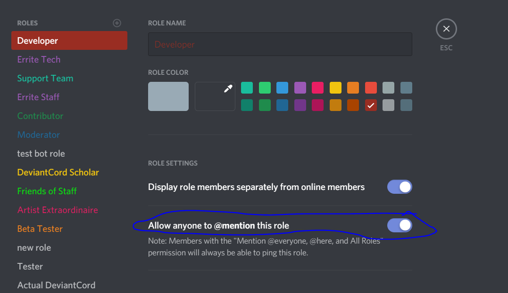
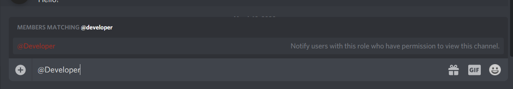

Setting Up Permissions¶
Note
DeviantCord’s default prefix is ~ Use that to access the commands. You can change this after setting up permissions
DeviantCord checks a designated role to verify if a user has permissions to use the bot. As such, until you specify a role, no commands besides the help command and setuprole command will work.
The setuprole command, designates the minimum role required to utilize the bots commands. There are two different ways to do this with the setuprole command.
Method 1: Mentioning Role¶
Mentioning the role within the setuprole command is the most straightforward way to designate a role with the setuprole command. However you will need to make sure that you can mention the role, to be able to mention the role on the server
Enabling Role Mentions¶
By default you cannot mention a role, you have to enable on the server manually. To do this first go to the Roles section within Server Settings.
Select the role that you want to enable mentions for and enable the circled section in the image below
After enabling mentions for the role you should then be able to mention the role like below
Using the setuprole command (Mentions)¶
Once you have confirmed that you are able to mention the role you want to designate, execute the command using the example below
~setuprole rolenamehere
Method 2: Numeric Role ID¶
Specifying the RoleID is a great way to specify the role, without pinging the whole group. If you happen to know the roleid. You can use the following replacing roleid with your roleid.
~setuprole roleid
In the instance that you do not have the roleid. It is recommended to use Method 1. The whole purpose of using Method 2 is to avoid pinging the whole group, provided you already have the role id.
To find the roleid, will involve pinging the whole group in question.
If you are having issues with Method 1, contact DeviantCord support.
You can find details on contacting DeviantCord support here Contacting DeviantCord Support
Common Pitfalls¶
Here are some common misconceptions with setting up permissions for DeviantCord.
I specified the roleid, but it still says its invalid!¶
Make sure that you only provide numbers for the roleid.
When you try getting the roleid it might look like this:
<@&576558692904730643>
However, you only need the numbers. Using the roleid above, you would only specify 576558692904730643.
~setuprole 576558692904730643
If you provided only numbers, make sure that the roleid you provided is correct.
Otherwise contact DeviantCord support below Nothing happens when I use the setuprole command! ********************************************* The setuprole command requires that you have Administrator on the server.
Verify that you have Administrator on the server.
Contacting DeviantCord Support¶
You can find details on contacting DeviantCord support here Contacting DeviantCord Support